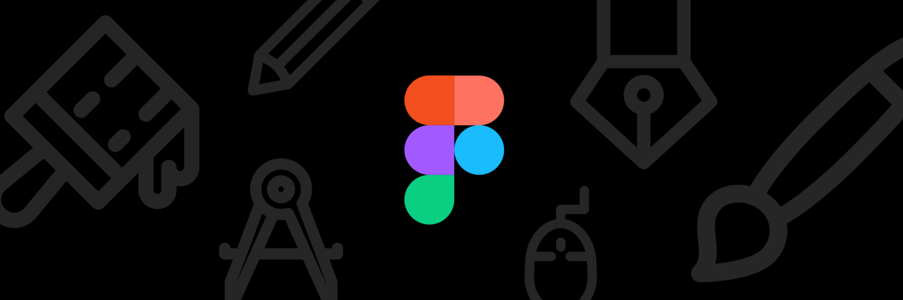

**Figma** — это облачный инструмент для проектирования пользовательских интерфейсов (UI) и создания интерактивных прототипов.
Она считается одним из самых популярных инструментов для веб-дизайна и разработки благодаря своим мощным возможностям и удобству в использовании.
Плюсы использования Figma:
- Облачная работа: Все проекты хранятся в облаке, что позволяет работать из любого места и на любом устройстве.
- Совместная работа в реальном времени: Несколько пользователей могут редактировать дизайн одновременно, что особенно полезно для командных проектов.
- Кроссплатформенность: Figma доступна в браузере, а также имеет приложения для Windows и macOS.
- Простота использования: Удобный интерфейс и понятные инструменты делают Figma подходящей как для новичков, так и для профессионалов.
- Плагины и шаблоны: Поддержка множества плагинов и готовых шаблонов для ускорения работы.
- Бесплатный тариф: Основной функционал доступен бесплатно.
Минусы использования Figma:
- Зависимость от интернета: Для работы требуется стабильное интернет-соединение, хотя есть ограниченная оффлайн-версия.
- Ограничения бесплатного тарифа: Бесплатный тариф ограничивает количество проектов и возможностей.
- Нагрузка на систему: На слабых устройствах работа в Figma может быть замедлена.
- Отсутствие встроенных возможностей для иллюстраций: Инструмент фокусируется на UI/UX-дизайне, но менее удобен для создания сложных иллюстраций.
Если вы хотите больше узнать о Figma, посетите их
официальный сайт.
Вернуться на главную